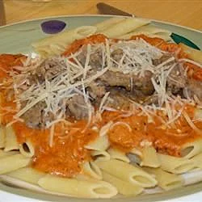

Vodka sauce Pasta

Description
Vodka sauce pasta to satisfy the hunger and taste buds!
Ingredients
- 1 onion, chopped
- Vodka sauce of your choice
- 3 cloves garlic, minced
- 1/4 cup olive oil
- 1/4 pound thinly sliced prosciutto
- 1 can (28 ounce) crushed tomatoes
- 1/4 tsb dried oregano
- 2 tbsp chopped fresh parsley
- 1 tbsp dried basil
- 1/4 tsb cayenne pepper
- 1 cup half-and-half cream
- 1 pound penne pasta
Steps
- In a large skillet, heat oil over medium heat. Cook onion, celery, and garlic in oil; stir until soft. Add prosciutto and vodka. Simmer until almost all liquid is gone.
- Add tomatoes, cayenne, and herbs. Simmer for 10 minutes.
- Stir in half and half, and heat for 3 minutes.
- Meanwhile, cook pasta in boiling salted water until done. Drain. Serve sauce over noodles.